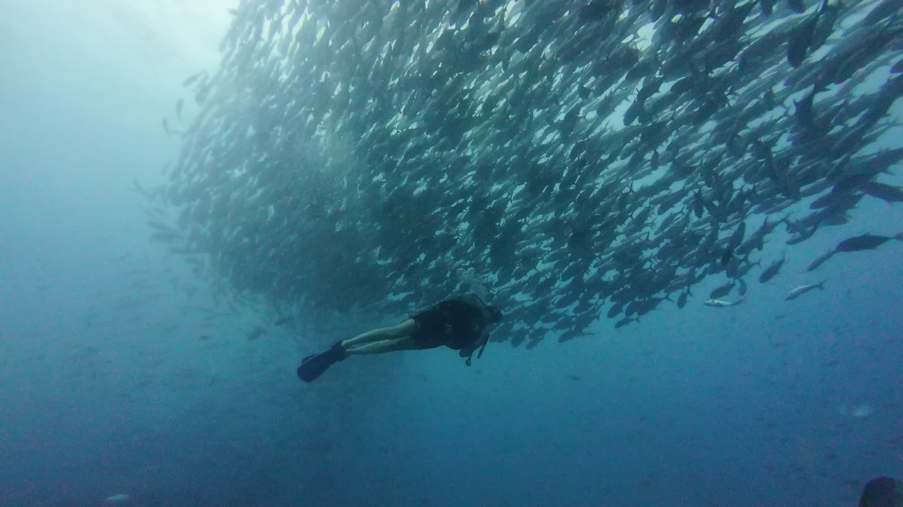
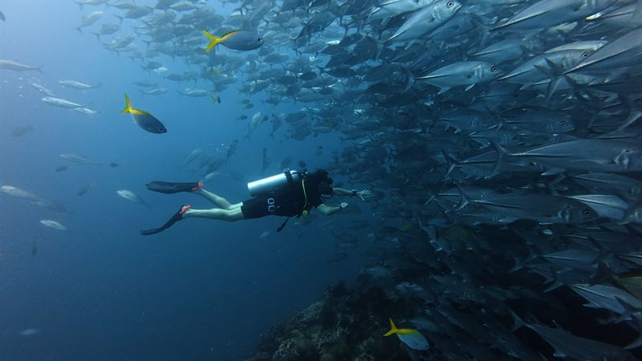
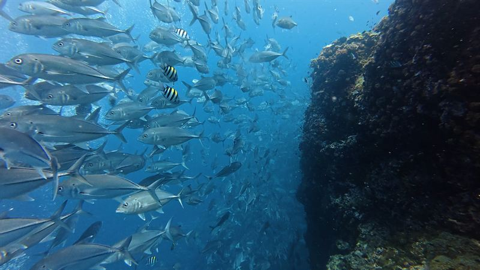

Profonde
Jusqu'à 30 mètres avec votre instructeur : planifier votre air, reconnaître la narcose et voir les couleurs disparaître avec la profondeur.

Accueil / Formations SSI / Advanced Open Water
Deux jours et cinq plongées d'aventure qui font de vous, jeune plongeur, un plongeur confiant, certifié jusqu'à 30 mètres. Vous pouvez commencer le lendemain de votre Open Water : 12,500฿ depuis Chaloklum, Koh Phangan, tout compris.

De 18 à 30 mètres
En bref
L'Open Water vous apprend à plonger. L'Advanced Open Water, c'est là que vous commencez à en profiter : meilleure flottabilité, savoir vous orienter seul sous l'eau, descendre plus profond en sécurité, et regarder ce qui vous entoure plutôt que votre équipement.
La formation
Profonde et Navigation font partie de chaque formation Advanced. Les trois autres sont en général Flottabilité parfaite, Photographie et Identification des poissons : celles qui changent le plus vos plongées suivantes.
Jusqu'à 30 mètres avec votre instructeur : planifier votre air, reconnaître la narcose et voir les couleurs disparaître avec la profondeur.
Navigation au compas et naturelle, pour pouvoir guider et toujours retrouver le chemin du bateau.
Ajuster votre lestage et votre respiration pour rester en suspension sans effort : moins d'air consommé, et sans toucher le récif.
Les bases de la photo sous-marine : s'approcher, rester immobile et utiliser la lumière.
Apprendre à reconnaître les poissons du golfe de Thaïlande, pour que chaque plongée devienne plus intéressante.

Sail Rock · là où se font la plupart des plongées
Où vous plongez
La plupart des plongées de l'Advanced ont lieu à Sail Rock, dont les tombants descendent jusqu'à 40 mètres : parfait pour la plongée profonde.
De janvier à mai, quand les conditions y sont en général meilleures, nous plongeons aussi à Koh Ma ou Little Sail Rock. Vous terminez ainsi la formation en ayant plongé sur plus d'un site, ce qui est déjà un bon entraînement.
Pour qui
Pas besoin de plongées ni d'expérience en plus : les quatre plongées de votre formation Open Water suffisent. Beaucoup de nos élèves enchaînent les deux formations et terminent avec cinq jours de plongée.
Questions
12 500฿ par personne, tout compris : votre instructeur SSI, tout l'équipement, les journées en bateau avec déjeuner et boissons, et votre certification. La location de caméra sous-marine est à 600฿ en plus.
Deux jours, avec cinq plongées d'aventure.
Oui. Début 2026, SSI a renommé la formation Advanced Adventurer en Advanced Open Water. Le niveau obtenu avec quatre spécialités et 24 plongées enregistrées s'appelle désormais Advanced Specialty Diver.
Ils sont équivalents : cinq plongées d'aventure, avec Profonde et Navigation dans les deux cas, et une certification jusqu'à 30 mètres. Chaque organisme reconnaît la certification de l'autre.
Non. Les quatre plongées de votre formation Open Water suffisent, et vous pouvez commencer l'Advanced dès le lendemain.
Toujours Profonde et Navigation. Les trois autres sont en général Flottabilité parfaite, Photographie et Identification des poissons. Si quelque chose d'autre vous intéresse, dites-le-nous à la réservation.
Jusqu'à 30 mètres, ou 21 mètres pour les plongeurs de 12 à 14 ans. Pour descendre à 40 mètres, l'étape suivante est la spécialité Deep.
La formation Specialty Diver avec Deep et Nitrox, qui permet de plonger au fond de Sail Rock à 40 mètres avec plus de temps au fond, et la formation Rescue Diver.
Envoyez-nous vos dates sur WhatsApp, seules ou juste après votre Open Water, et nous vous confirmons votre place.
Pas encore certifié ? Commencez par la Formation Open Water, ou découvrez toutes nos formations.